Opdracht 2: Part picking and placing with vision
In deze opdracht gaan we aan de slag met het oppakken en plaatsen van objecten met behulp van vision. De objecten worden herkend door de camera op basis van kleur en vorm.
Voorbereidingen
Montage van de camera
Monteer de camera op de aangegeven positie zoals te zien is in de onderstaande afbeeldingen.
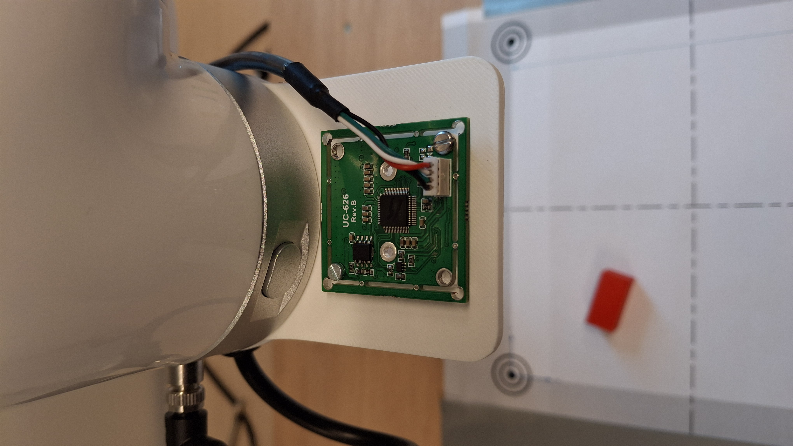
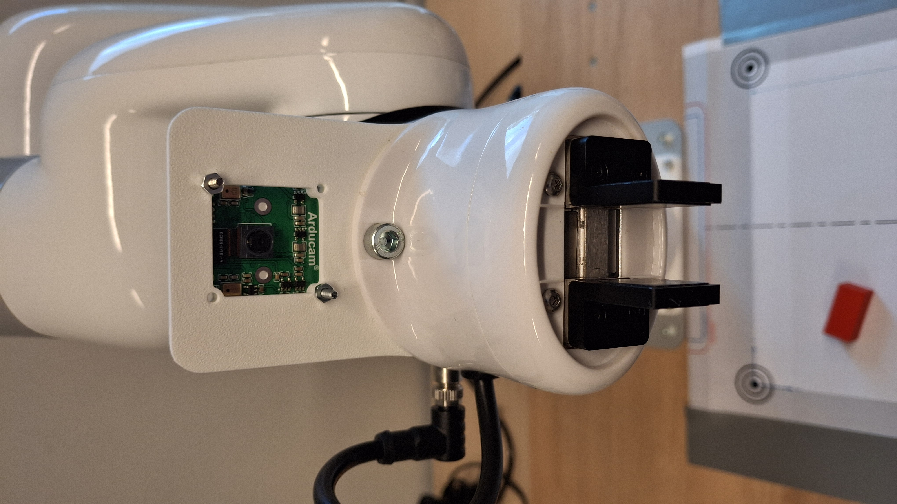
Maken van een workspace
Druk het bestand RobotVisionWorkspaceV2.pdf (te vinden in de map support/workspace) af met een printer en positioneer de workspace onder de robot.
Testen van de camera met de workspace
Start het programma markerTest.py (map workspace/examples, zie ook examples_README.md) en bestudeer de weergegeven afbeeldingen. Controleer of alle markers correct worden herkend. Zie onderstaande afbeelding voor een voorbeeld.
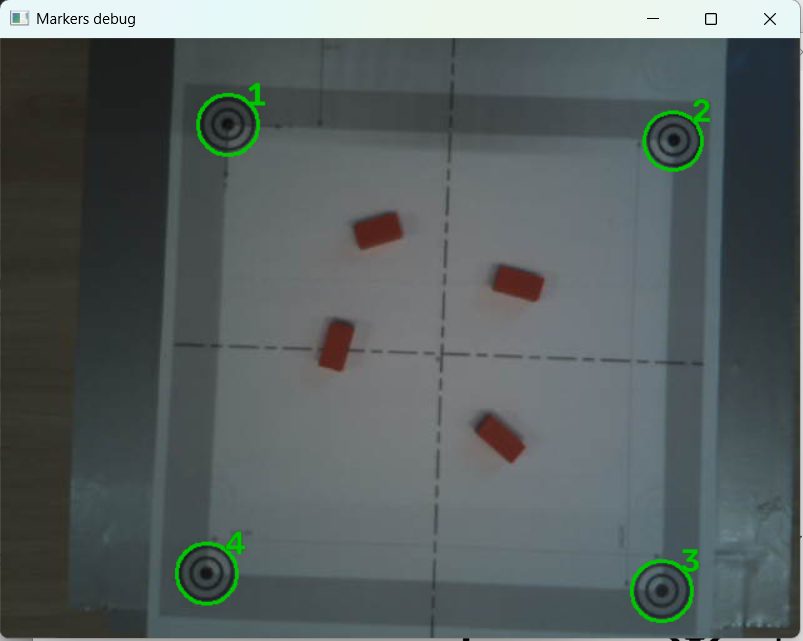
Als dit niet correct wordt weergegeven, verschuif dan de workspace zodat alle markers correct worden herkend.Fixeer de workspace (met tape) zodat deze niet meer verschuift.
Objectparameters bepalen
De objectparameters bestaan uit de HSV-kleurwaarden en de vorm van het object.
Kleurspectra van de op te pakken objecten bepalen
Leg een object op de workspace zodat de camera het kan waarnemen.
Start de tool hsvFilterFromStream.py (map workspace/tools, zie ook tools_README.md) en bepaal voor elk object de juiste HSV-kleurwaarden. Verplaats de sliders totdat alleen het object zichtbaar is en de achtergrond wordt uitgesloten.
Tip
Werk zorgvuldig en kijk goed wat er gebeurt bij het verplaatsen van elke afzonderlijke slider.
Hieronder is een voorbeeld voor de kleur rood weergegeven.
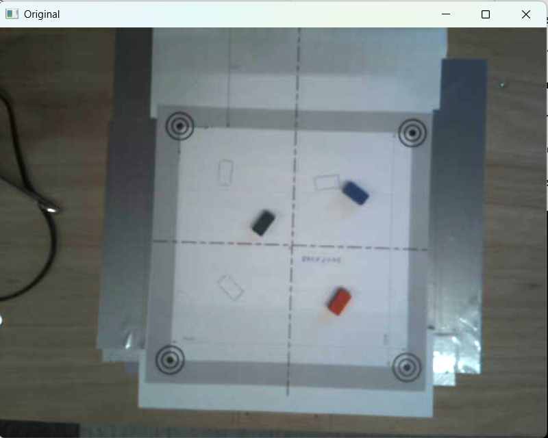
Orgineel beeld
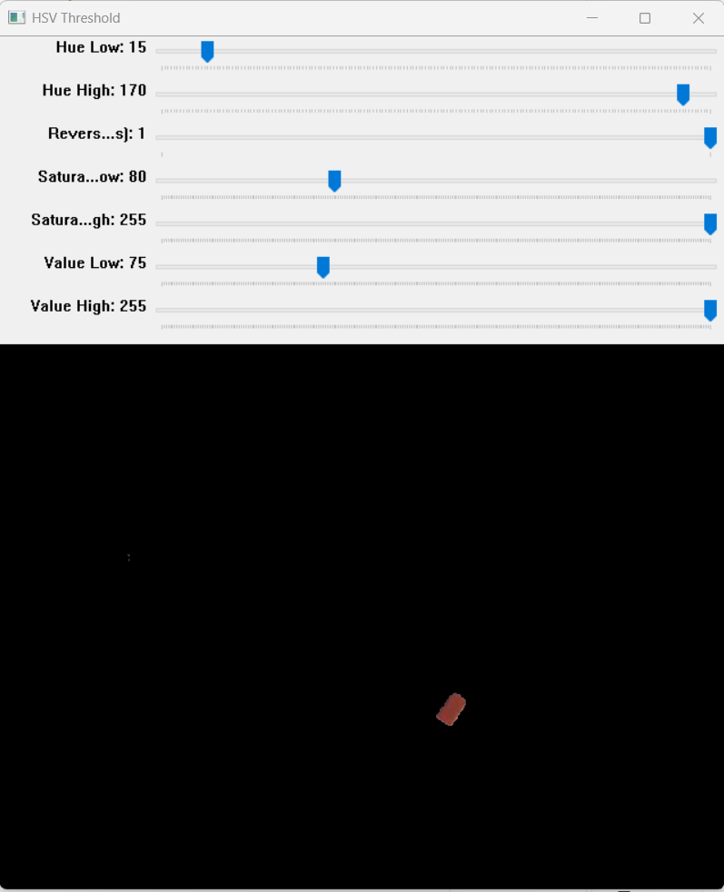
Slider instellingen
Noteer deze waarden zorgvuldig, aangezien ze later gebruikt worden voor het herkennen van de objecten.
Voorbeeld-
Tip
Verschuif de objecten over de gehele workspace om te controleren of de kleurwaarden consistent worden herkend.
Testen van de kleurspectra
Start het programma ObjectDetectorTest.py (map workspace/examples) om te controleren of de objecten correct worden herkend.
Je kunt het type object en de kleur aanpassen in de code om te testen of de objecten correct worden herkend.
Zoek het volgende codefragment in ObjectDetectorTest.py en pas het aan om het gewenste object en kleur te testen.
detector = ObjectDetector(
obj_type=OBJECT_TYPE, obj_color= obj_type=OBJECT_TYPE, obj_color=OBJECT_COLOR,
workspace_ratio=1.0,
ret_image_bool=True,
)
De waardes voor OBJECT_TYPE en OBJECT_COLOR zijn bovenin het programma gedefineerd.
OBJECT_TYPE = ObjectType.ANY
OBJECT_COLOR = ColorHSV.BLUE
De volgende obj_type-waarden zijn gedefinieerd (zie libraries/vision/enums.py):
class ObjectType:
SQUARE = 4
CIRCLE = -1
ANY = 0
De volgende obj_color-waarden zijn gedefinieerd:
class ColorHSV:
"""
MIN HSV, MAX HSV, Invert Hue (bool)
"""
BLUE = [90, 50, 85], [125, 255, 255], False
RED = [15, 80, 75], [170, 255, 255], True
GREEN = [40, 60, 75], [85, 255, 255], False
ANY = [0, 50, 100], [179, 255, 255], False
Je kunt ook eigen kleurwaarden gebruiken door een tuple van de vorm ([MIN_H, MIN_S, MIN_V], [MAX_H, MAX_S, MAX_V], Invert_Hue) op te geven. Zie het voorbeeld hieronder.
detector = ObjectDetector(
obj_type=ObjectType.ANY, obj_color=([15, 80, 75], [170, 255, 255], True),
workspace_ratio=1.0,
ret_image_bool=True,
)
In onderstaande afbeelding kun je zien hoe een object wordt herkend op basis van de kleurwaarden die je hebt ingesteld.
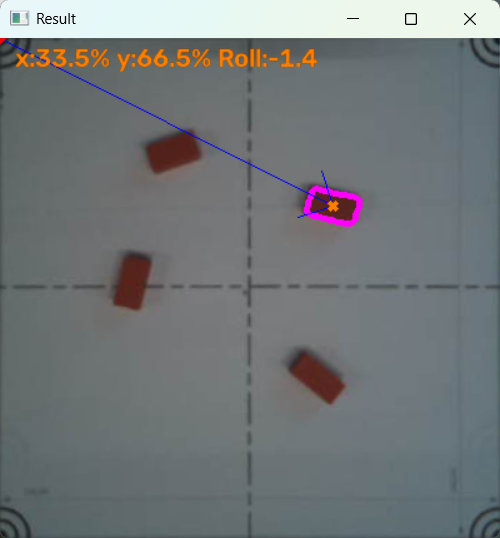
De waarden die de objectdetector geeft zijn relatief, in % t.o.v. marker 1 in de workspace. Marker 1 dient als referentiepunt voor de kalibratie van de workspace. Later worden deze waarden omgerekend naar absolute coördinaten in de workspace (ten opzichte van de robot).
Kalibratie van de workspace
Om de workspace correct te kalibreren, gebruik je het script calibrate_workspace.py (map workspace/tools, zie ook tools_README.md). Dit script helpt bij het instellen van de referentiepunten in de workspace zodat de objectdetector de positie van objecten nauwkeurig kan bepalen.
Plaats in de gripper van de robot een kalibratietool, zie afbeelding hieronder.
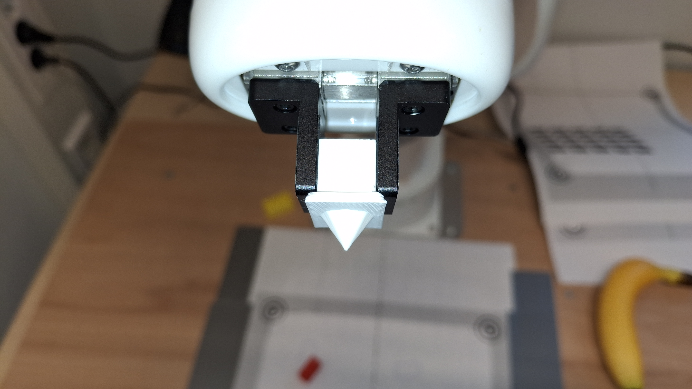
Voer het script calibrate_workspace.py uit om de kalibratie van de workspace te starten. Het script zal je begeleiden bij het instellen van de referentiepunten.
Zorg dat je de markers nauwkeurig “aanwijst” met de kalibratietool. De kalibratietool dient loodrecht te worden gehouden tijdens het aanwijzen van de markers; het programma geeft een waarschuwing als dit niet correct gebeurt.
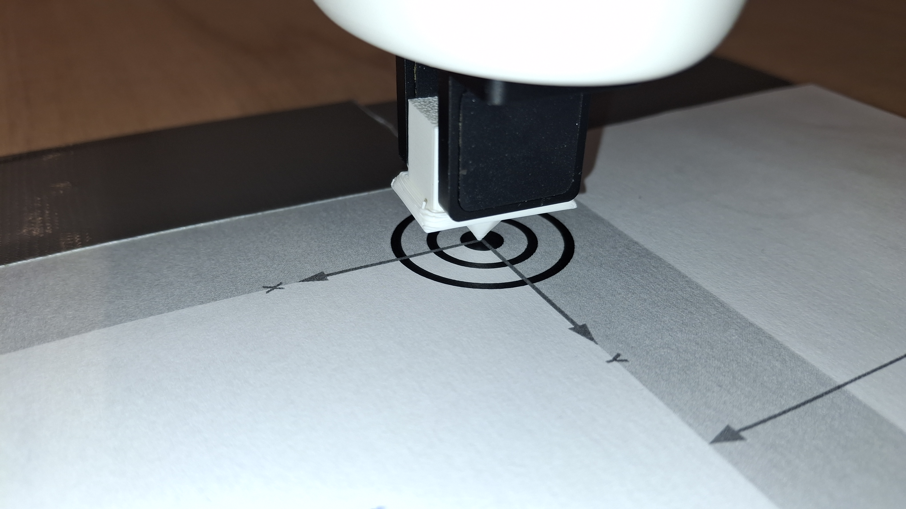
Na het succesvol kalibreren van de workspace wordt een JSON-bestand (workspace.json) aangemaakt met de kalibratiegegevens van de workspace. Een voorbeeld van de inhoud van dit bestand is hieronder weergegeven.
{"UpperLeftPose": {"x": 173.642838, "y": -116.241768, "z": 90.18734}, "UpperRightPose": {"x": 172.243362, "y": 128.624191, "z": 88.854294}, "LowerRightPose": {"x": 413.970306, "y": 116.073051, "z": 89.728302}, "LowerLeftPose": {"x": 414.263641, "y": -110.855942, "z": 91.140907}}
Notitie
Als de workspace verschoven is, moet je de kalibratie opnieuw uitvoeren om ervoor te zorgen dat de objectdetector de juiste posities van de objecten kan bepalen.
Testen van enkelvoudige Pick and Place
Met het script PickAndPlace.py (map workspace/examples, zie ook examples_README.md) test je de enkelvoudige pick-and-place-functionaliteit van de robot. Het script gebruikt de camera en de objectdetector om een object te herkennen, rekent de positie om naar robotcoördinaten met behulp van de eerder gekalibreerde workspace (workspace.json), en stuurt vervolgens de robot aan om het object op te pakken en naar de opgegeven locatie te verplaatsen. Zorg ervoor dat de objecten correct zijn gepositioneerd binnen de gekalibreerde workspace voordat je het script uitvoert.
Zoek het volgende codefragment in PickAndPlace.py en pas het aan om het gewenste object en kleur te testen.
detector = ObjectDetector(
obj_type=ObjectType.ANY, obj_color=ColorHSV.RED,
workspace_ratio=1.0,
ret_image_bool=True,
)
Bestudeer de werking van het script en probeer te begrijpen hoe de objectdetector en de robot samenwerken om de pick-and-place-taken uit te voeren.
Opdracht 2.1
Maak een programma dat een aantal willekeurige objecten uitsorteert.
Kleur: Sorteer de objecten op basis van hun kleur.
Vorm: Sorteer de objecten op basis van hun vorm (bijvoorbeeld vierkant of rond, zie de klasse
ObjectTypeinlibraries/vision/enums.py).
Het programma moet de objecten detecteren met behulp van de camera en vervolgens de robot aansturen om de objecten naar de juiste locaties te verplaatsen. Je kunt hiervoor het script PickAndPlace.py als basis gebruiken en aanpassen aan de specifieke eisen van de opdracht.
Hieronder enkele voorbeeldafbeeldingen van een pick-and-place-opstelling:
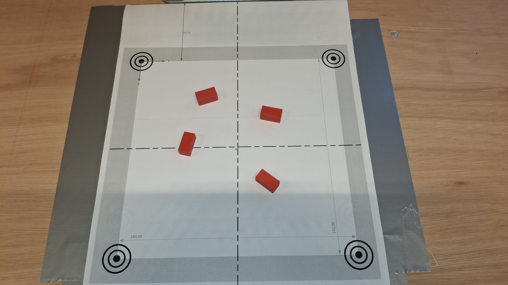
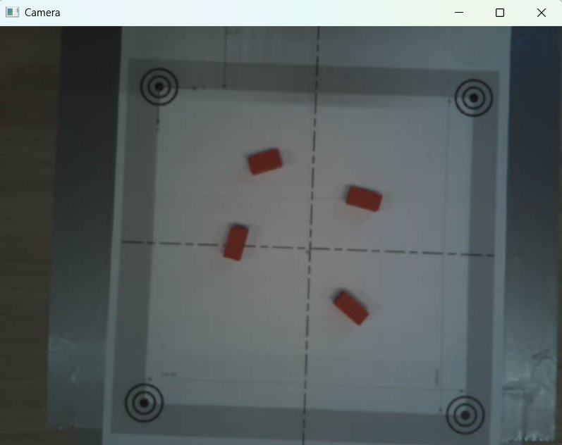
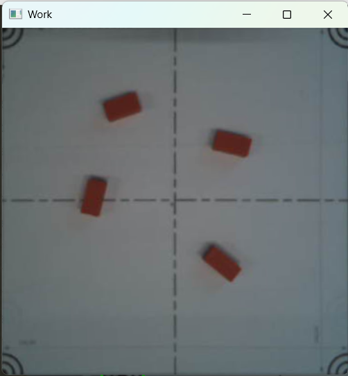